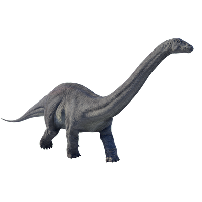

Useful Website
At over 20m in length and around 19 tonnes, Apatosaurus is one of the largest dinosaurs ever to have existed. This herbivorous Sauropod has a long neck that allows it to feed on the leaves of tall trees as well as lower-hanging plants, while the tip of its tail can be whipped to produce a loud bang that scares off predators.
